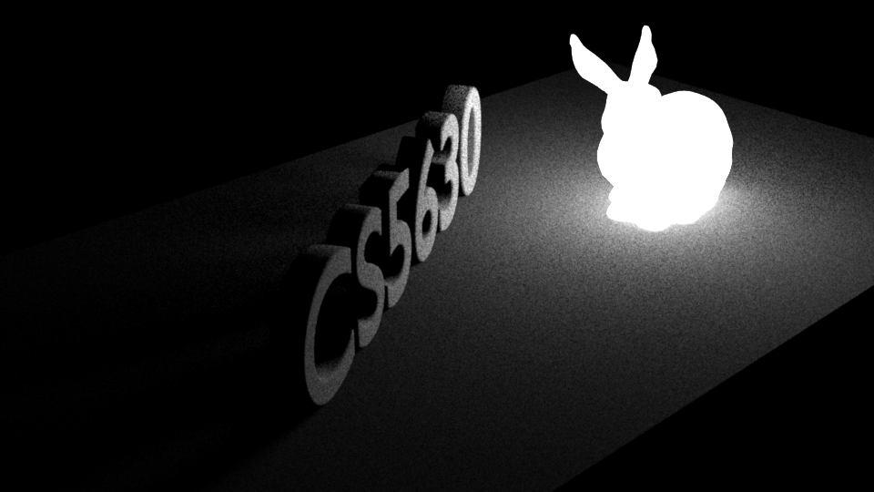
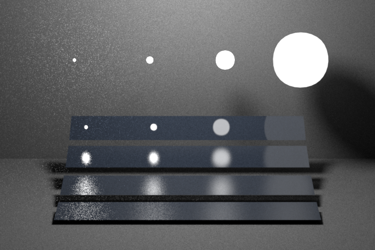
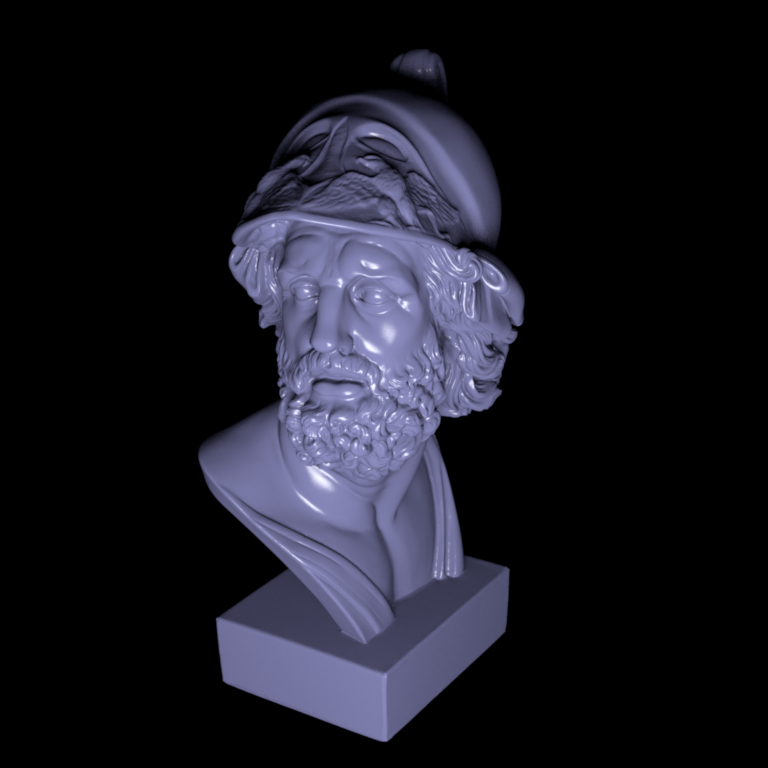
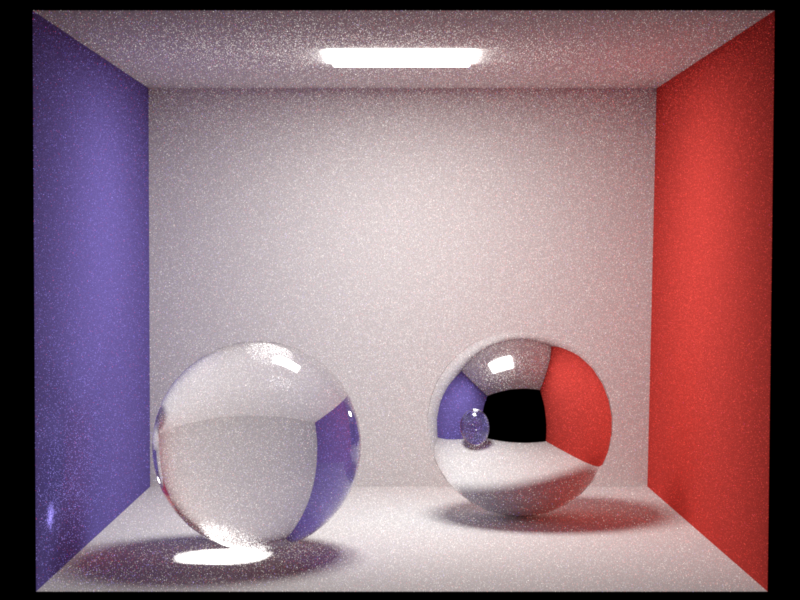
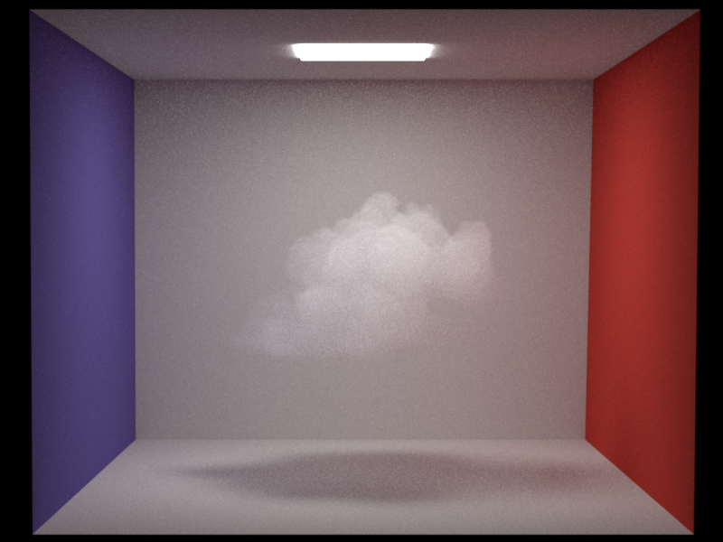

Renderer Gallery

Bunny Light
Multiple Importance Sampling

Veach Scene
Multiple Importance Sampling
Rough Ajax
Microfacet Material

Smooth Ajax
Microfacet Material

Cornell Box
Path Tracing + MIS

Cornell Box Volume
Heterogeneous Participating Media